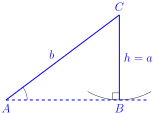
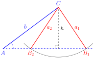

Section 4.1 The Law of Sines
Recall the example from Section 2.4 where Alingano Maisu is sailing to her new home in Satawal. For the first leg of the voyage, we calculated that to sail from Johnston Atoll to Majuro, you would need to sail towards the house House ʻĀina Kona (\(27.4^{\circ}\)). In reality, there are currents that push the wa‘a off course. Now let’s consider that a current of 1 knot is flowing to the house Komohana (West). If we were to face Majuro and sail straight, the current put us to the west of our destination. To ensure we arrive at Majuro, our apparent heading will need to be a point to the west of our destination, as shown below.

If we sail at 5 knots, what house will we need to face in order to compensate for the current of 2 knots? First notice that by alternate interior angles, we have that \(A=27.4^{\circ}\text{.}\) Now we will write the triangle where the sides represent speed and we can ignore the distance.
We cannot use the methods from previous sections to solve for this triangle because this is not a right triangle. Any triangle with no right angles is called an oblique triangle. In this section, we will learn methods to solve oblique triangles.
To solve an oblique triangle, we must know the length of one side as well as two other values of the triangle. This gives us a total of 5 possible triangles.
Angle-Side-Angle (ASA): Two angles and the side between them are known

Side-Angle-Angle (SAA): One side and two consecutive angles are known
Side-Side-Angle (SSA): Two sides and the angle that is not between them are known
Side-Angle-Side (SAS): Two sides and the angle between them are known
Side-Side-Side (SSS): All three sides of a triangle are known
In this section, we learn techniques to solving triangles of the form ASA, SAA, and SSA.
Subsection 4.1.1 Law of Sines
In any triangle, we can draw an altitude, a line through a vertex and perpendicular to the side opposite the vertex.

Using the right triangles, we have \(\sin A=\frac{h}{b}\) and \(\sin B=\frac{h}{a}\text{.}\) Solving both equations for \(h\text{,}\) we get \(h=b\sin A\) and \(h=a\sin B\text{.}\) Since these equations both equal \(h\text{,}\) we can now set them equal to each other.
Dividing both sides by \(ab\text{,}\) we get
Using the same method, we can get
Putting these together, we get
This is known as the Law of Sines.
Theorem 4.1.1. Law of Sines.
In triangle \(ABC\text{,}\) we have
which may also be written in the form
The first form is more convenient when you are trying to find an angle and the second form is more convenient when you are trying to find a side.
\begin{mybox} When solving triangles, it is often useful to use the fact that the sum of the angles in a triangle equals \(180^{\circ}\text{.}\) That is,
\end{mybox}
Example 4.1.2. Using Law of Sines (ASA).
The waʻa Kānehūnāmoku is returning from an afternoon sail from training students in the ways of sailing. Two observers stand 1,000 feet apart on the shore at Kāne`ohe Bay spot Kānehūnāmoku. Observer \(A\) determines that the angle between the waʻa and Observer \(B\) is \(80^{\circ}\) while Observer \(B\) determines that the angle between the waʻa and Observer \(A\) is \(60^{\circ}\text{.}\) How far is Kānehūnāmoku from each observer and what is the angle formed by the two observers (round your answer to the nearest foot)?
In this triangle, we know the values of two angles and the side between them, so we have an Angle-Side-Angle (ASA) triangle. We know that \(A+B+C=180^{\circ}\text{.}\) So \(80^{\circ}+60^{\circ}+C=140^{\circ}+C=180^{\circ}\) so \(C=40^{\circ}\text{.}\) To solve for \(a\text{,}\) we will use the Law of Sines. Either form for the Law of Sines can be used to solve this problem, but since we are solving for a side, it would be easier and require fewer steps if we use the second form for the Law of Sines.
Multiplying both sides by \(\sin 80^{\circ}\text{,}\)
To solve for \(b\text{,}\) we have two options to use for the Law of Sines
Because our answer for \(a\) was rounded, using the first option may lead to rounding errors so it is best to use the second option because it has known values that we were originally given in the problem (\(c=1,000\)). Thus we will use
So we get
Thus Kānehūnāmoku is 1,347 feet from Observer A and 1,532 feet from Observer B, and the angle between the two observers is \(40^{\circ}\text{.}\)
Example 4.1.3. Using Law of Sines (SAA).
For the triangle shown below with \(A=120^{\circ}\text{,}\) \(C=20^{\circ}\text{,}\) and \(a=5\text{,}\) find the remaining sides. Round your answer to two decimal places.
In this triangle, we know the values of one side and two consecutive angles, so we have a Side-Angle-Angle (SAA) triangle. The third angle can be calculated by subtracting the known angles from \(180^{\circ}\text{.}\)
Using the first form of the Law of Sines
we have
Subsection 4.1.2 The Ambiguous Case
Although the Law of Sines can be used to solve oblique triangles, there may be cases that would give us one triangle, two triangles, or even no solution. Such cases are known as the ambiguous case. This occurs when we know two sides and an angle that is opposite to one of the given sides.
\begin{mybox}[The Ambiguous Case] Consider a triangle where \(a\text{,}\) \(b\text{,}\) and \(A\) are given. The altitude is \(h=b\sin A\text{.}\) Then we have the following possibilities
| No triangle |
One right triangle 
|
 |
| \(A\) is acute and \(a\lt h=b\sin A\) | \(A\) is acute and \(a=h=b\sin A\) | |
| Two triangles (\(\Delta ACB_1\) and \(\Delta ACB_2\)) | One triangle | |
| \(A\) is acute and \(h=b\sin A\lt a\lt b\) | \(A\) is acute and \(a\geq b\text{.}\) | |
| No triangle | One triangle | |
| \(A\) is obtuse and \(a\leq b\) | \(A\) is obtuse and \(a>b\) | |
\end{mybox}
To generalize the ambiguous case of SSA, we are given a triangle with (1) a known angle, \(\theta\text{;}\) (2) a side adjacent to \(\theta\text{;}\) (3) a side opposite to \(\theta\text{.}\) If we calculate the altitude \(h=\) (adjacent side)\(\sin\theta\text{,}\) then Table 4.1.4 summarizes the possible cases.
| Case | \(\theta\) | Condition on Opposite Side | Number of Triangles |
| 1 | acute | opposite side \(\lt\) altitude | None |
| 2 | acute | opposite side = altitude | One (right triangle) |
| 3 | acute | altitude \(\lt\) opposite side \(\lt\) adjacent side | Two |
| 4 | acute | opposite side \(\geq\) adjacent side | One |
| 5 | obtuse | opposite side \(\leq\) adjacent side | None |
| 6 | obtuse | opposite side \(>\) adjacent side | One |
Example 4.1.5. Using Law of Sines (SSA) one-solution.
We can now return to the example at the start of the section where the Alingano Maisu must account for a current and we had the following triangle
What house do we need to head in order to account for current?
Referring to Table 4.1.4, our known angle (\(A=27.4^{\circ}\)) is acute, the side opposite of our angle (\(a=5\)) is greater than the side adjacent to the angle (\(c=1\)) so we have Case 4 and know that we have one triangle.
Using the first form of the Law of Sines
we get
Taking the inverse sine we get
Now that we know the value of \(C\text{,}\) we will need to add that to the heading that we determined in the last section (\(207.4^{\circ}\)) to get \(5.8^{\circ}+207.4^{\circ}=213.2^{\circ}\text{.}\) Next we refer to the Star Compass with angles (Figure 1.2.4 on page 1.2.4) to conclude we will need to sail towards the House Noio Kona.
Example 4.1.6. Using Law of Sines (SSA) no solution.
Solve the triangle if \(C=70\text{,}\) \(b=6\text{,}\) and \(c=5\text{.}\)
The altitude of the triangle is \(h=b\sin C=6\sin70^{\circ}\approx5.64\text{.}\) Since \(C\) is an acute angle and the altitude (\(h\approx5.64\)) is greater than the side opposite of the angle (\(c=5)\text{,}\) then by Table 4.1.4, there is no triangle.
Example 4.1.7. Using Law of Sines (SSA) two solutions.
Solve the triangle if \(a=6\text{,}\) \(b=7\text{,}\) and \(A=40^{\circ}\text{.}\)
The altitude of the triangle is \(h=b\sin A=7\sin40^{\circ}\approx4.50\text{.}\) Since \(A\) is an acute angle and the altitude (\(h\approx4.50\)) is less than the opposite side (\(a=6\)) which is less than the adjacent side (\(b=7)\text{,}\) then by Table 4.1.4, there are two triangles.
Using the first form for the Law of Sines
we get
Here we have that \(\sin B\) is positive and we know that sine is positive in Quadrant I and II so our value for \(B\) may be between \(0^{\circ}\) and \(180^{\circ}\text{.}\) Taking the inverse sine we get our first angle
which is in Quadrant I. To calculate the angle in Quadrant II, we subtract the reference angle from \(180^{\circ}\) to get
So we now have two triangles: \(AB_1C\) and \(AB_2C\text{.}\)

To solve triangle \(AB_1C\text{,}\) be begin by finding \(C_1\)
To find the side \(c_1\text{,}\) we use the second form for the Law of Sines
Thus
To solve triangle \(AB_2C\text{,}\) we begin by finding \(C_2\)
To find the side \(c_2\text{,}\) we use the second form for the Law of Sines to get
Subsection 4.1.3 Area of an oblique triangle
After heavy use, you determine it's time to replace the peʻa (sail) of your waʻa. Before you buy the new peʻa, you need to determine its area. We know the length of the `ōpeʻa (spar) is \(b=18\) feet, the length of the paepae (boom) is \(a=15\) feet, and the tack or the angle between them is \(C=44^{\circ}\text{.}\) What is the area of the peʻa?
At this point, we don't have a formula for the area of an oblique triangle. However, we can apply the sine function to an oblique triangle to develop a new formula for the area of a triangle.
\begin{mybox}[Area of a Triangle] Given two sides of a triangle and their included side, the area of the triangle is given by
In other words, the area of a triangle equals one half of the product of two sides and the sine of their included angle. \end{mybox}

Proof.
Recall the area of any triangle is \(\mbox{Area} =\frac{1}{2}bh\) where \(b\) is the base and \(h\) is the height of a triangle. In a right triangle, the height is the length of one side. However, in an oblique triangle, the height is not immediately known.
If the angle \(C\) is acute, then using the property that
the height is then given by
If the angle \(C\) is obtuse, then we use the reference angle for \(C\text{,}\) \(180^{\circ}-C\) to get
By the difference formula we get \(\sin(180^{\circ}-C)=\sin C\) and thus
In a right triangle, \(C=90^{\circ}\) and since \(\sin90^{\circ}=1\text{,}\) we can also write
Thus regardless of the triangle, we get
The other formulas are obtained using a similar method.
Example 4.1.8. Area of a sail.
We can now calculate the area of the sail

Using the formula, the area is
Thus we will need to order a sail that is 93.8ft\(^2\text{.}\)
Checkpoint 4.1.9.
\Question (SSA) A waʻa is sailing in the direction Hikina (east) at 5 knots and spots an island in the house Lā Koʻolau. 6 hours later the navigator measures the island in the house Manu Hoʻolua. How far is the waʻa from the island at the time of its second measurement? How close did the waʻa get to the island (measure the altitude)?
\Question Recall the example from Section 2.4 where Hinemoana is sailing to Rarotonga. We calculated that to sail from Aotearoa to Rarotonga, you would need to sail towards the house Manu Koʻolau (\(41.8^{\circ}\)). In reality, there are currents that push the wa‘a off course. Now let’s consider that a current of 2 knots is moving to the house Hikina (East). If we were to face Rarotonga and sail straight, the current put us to the east of our destination. To ensure we arrive at Rarotonga, our apparent heading will need to be a point to the west of our destination, as shown below.
*(check the direction of the current in real life to make this more realistic)
If we sail at 5 knots, what house will we need to face in order to compensate for the current of 2 knots? First notice that by alternate interior angles, we have that \(B=41.8^{\circ}\text{.}\) Now we will write the triangle where the sides represents the speed.